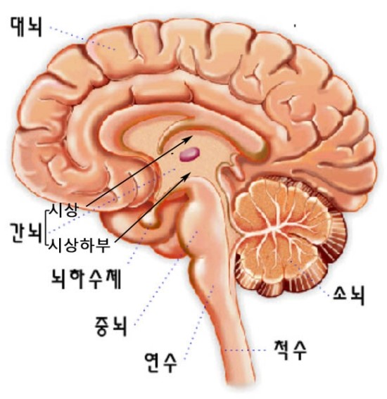

신경계는 중추 신경계와 말초 신경계로 구분한다.

중추 신경계 : 뇌와 척수가 있다.
- 자극을 판단하여 적절한 명령을 내린다.
- 뇌는 머리뼈로 싸여 보호되며, 기능에 따라 대뇌, 소뇌, 간뇌, 중간뇌, 연수로 구분
- 척수는 연수 아래쪽으로 뻗어 있으며 척추에 싸여 보호됨
신경계의 종류
- 대뇌 : 여러 자극을 해석하고 명령을 내리며 복잡한 정신 활동을 담당
- 소뇌 : 근육 운동을 조절하고, 몸의 자세와 균형을 유지
- 간뇌 : 체온과 체액의 농도를 일정하게 유지하도록 조절
- 중간뇌 : 안구 운동과 동공의 크기를 조절
- 연수 : 호흡 운동, 심장 박동, 소화액 분비를 조절 또 기침, 재채기, 눈물 분비 등과 같은 반사의 중추이다.
- 척수 : 뇌와 몸의 말단부 사이의 신호가 전달되는 통로이며, 일부 반사 운동의 중추이다.